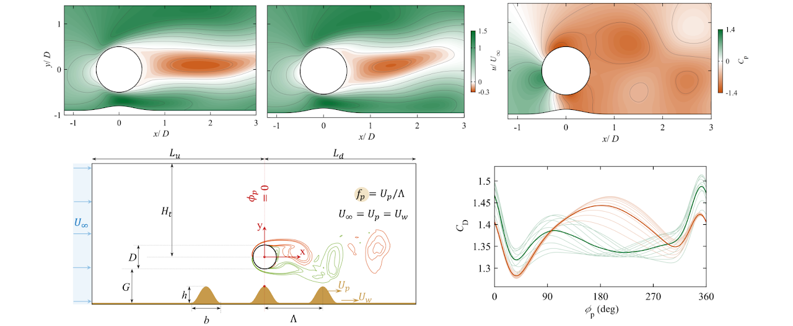
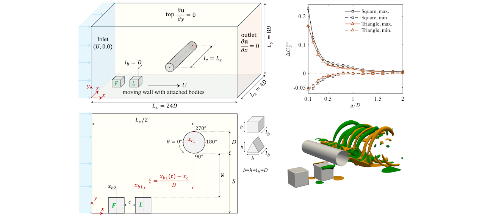

Wake dynamics
When water flows past a bluff body such as a cylinder, the flow separates from its surface and forms a wake downstream. Vortices shed from alternating sides can produce an oscillating lift force even when the cylinder is fixed. I study how nearby bodies and boundaries change the formation and shedding of those vortices, and how the resulting pressure changes affect lift and drag.
A passing body can change the cylinder load as it approaches and shift the timing of vortex shedding after it has passed. If a second body arrives while the wake is still recovering, how much of the next load can we predict from the state of the wake at that instant? When disturbances recur at regular intervals, I also ask when the wake synchronizes with them and how the amplitude of the forces changes.
How I study wakes
I compare velocity fields, surface pressure, and force histories at the same instant in a simulation. The velocity field shows where the flow separates and how the vortices develop. The pressure distribution helps explain which parts of the cylinder contribute to a change in loading. Tracking these quantities over several shedding cycles shows how long a disturbance persists.
I use controlled geometries to vary the timing, spacing, and clearance of passing bodies. I compare runs at the same stage of vortex shedding to examine the effect of an earlier encounter. My simulation and analysis tools include Julia, MATLAB, and Python.
Examples from my research
Periodic ridge passages Under submission
Synchronization and force fluctuations
In two-dimensional simulations at Reynolds number Re = 100, I varied the spacing of ridges on a moving wall. Two spacings synchronized the wake with the ridge passages. Relative to the smooth-wall case, one reduced lift fluctuations and the other increased them.
Manuscript & abstract →
Phase and recovery Under review
When the next disturbance arrives
A passing ridge changes both the cylinder load and the timing of later vortex shedding. At Re = 100, I examine how arrival phase and recovery from an earlier disturbance affect the response to a following ridge, and when recovery information improves a phase-only prediction.
Manuscript & abstract →
Successive body passages Under review
Geometry, clearance, and wake state
Three-dimensional simulations at Re = 400 examine square and triangular bodies passing beneath a cylinder. I compare isolated and successive encounters to separate the effects of clearance, body shape, and the incoming wake state on the immediate and delayed loading.
Manuscript & abstract →
The two-dimensional ridge cases and the three-dimensional passing-body cases differ in both geometry and Reynolds number. Their force magnitudes are specific to those conditions.